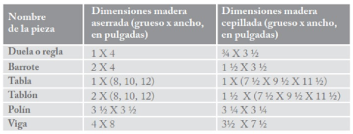
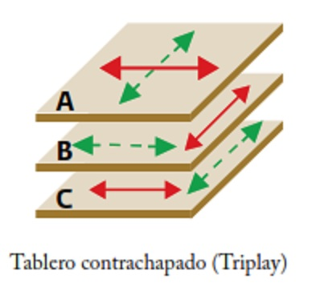
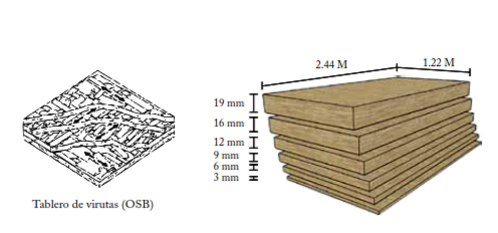

4.1. Medidas comerciales de la madera
Todas las piezas tienen un largo comercial de 8’ (2.44m) sólo el caso de las vigas que puedan tener los siguientes largos: 12’ (3.66m), 14’ (4.27m), 16’ (4.88m), 18’ (5.49m), 20’ (6.10m) Normalmente la madera se vende en largos cuya dimensión se da en pares de pies.
4.2. Clasificación de la madera
En forma visual debe clasificarse la madera en clase:
- “A”: Alta resistencia.
- “B”: Baja resistencia.
4.3. Tableros de madera
Los tableros que se usan para construcción son el triplay y el tablero de virutas orientadas (OSB). Para la construcción deberán tomarse en cuenta las dimensiones comerciales de los tableros, que comúnmente son de 1.22 m de ancho por 2.44 m de largo, y diseñar y dimensionar con submúltiplos y múltiplos de tales valores, es decir: 0.30, 0.40, 60 y 1.22 m.
 